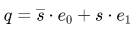
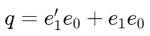
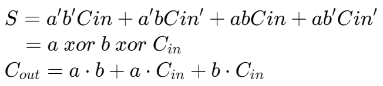

基本数字电路组件
多路复用器,,

2-1,, MUX
| s | q |
|---|---|
| 0 | e0 |
| 1 | e1 |


使用小的 MUX 组成更大的 MUX

使用 MUX 实现函数

MUX -> minterm

使用 MUX 实现异或门

使用 MUX 实现与门
多路分用器,,

解码器,,
独热码,,
输出多个 bit，其中只有一个 bit 为 1。

| e1 | e0 | q3 | q2 | q1 | q0 |
|---|---|---|---|---|---|
| 0 | 0 | 0 | 0 | 0 | 1 |
| 0 | 1 | 0 | 0 | 1 | 0 |
| 1 | 0 | 0 | 1 | 0 | 0 |
| 1 | 1 | 1 | 0 | 0 | 0 |
使用解码器实现函数
通常需要配合其它逻辑门实现


编码器,,

| q3 | q2 | q1 | q0 | e1 | e0 |
|---|---|---|---|---|---|
| 0 | 0 | 0 | 1 | 0 | 0 |
| 0 | 0 | 1 | 0 | 0 | 1 |
| 0 | 1 | 0 | 0 | 1 | 0 |
| 1 | 0 | 0 | 0 | 1 | 1 |
优先编码器,,
当多个输入同时为有效状态时，优先编码器会选择具有最高优先级的有效输入，并产生相应的二进制编码输出。
| q3 | q2 | q1 | q0 | r | e1 | e0 |
|---|---|---|---|---|---|---|
| 0 | 0 | 0 | 0 | 0 | X | X |
| 0 | 0 | 0 | 1 | 1 | 0 | 0 |
| 0 | 0 | 1 | X | 1 | 0 | 1 |
| 0 | 1 | X | X | 1 | 1 | 0 |
| 1 | X | X | X | 1 | 1 | 1 |
逻辑移位,,


笔记
使用上述的符号来表示有 n 个 bit 输入/输出

算术移位,,

在进行位的移位时，保持最高位的值。
旋转,,
Rotate Left: 将最左侧的位移到最右
Rotate Right: 将最右侧的位移到最左

加法器,,
半加器,,
no carry in

全加器,,


ripple-carry adder: chain n-bit full adders

运算逻辑单元,,
ALU 能组合多个运算单元(logic, add, compare 等)，通过 MUX 的输入决定具体进行什么运算。
比较器,,

- The output A>B is 1 if the number A is larger than B
- The output A=B is 1 if the number A and B are equal
- The output A<B is 1 if the number A is smaller than B
使能信号,,
决定电路元件是否正常工作。
当 enable=0 时，元件会进入高阻态,,状态